What if mankind had to leave Earth and somebody forgot to turn the last robot off? After hundreds of years doing what he was built for, WALL•E discovers a new purpose in life when he meets a sleek search robot named EVE. EVE comes to realize that WALL•E has inadvertently stumbled upon the key to the planet's future, and races back to space to report to the humans. Meanwhile, WALL•E chases EVE across the galaxy and sets into motion one of the most imaginative adventures ever brought to the big screen.
WALL•E (Waste Allocation Load Lifter Earth-Class) is the last robot left on Earth, programmed to clean up the planet, one trash cube at a time. However, after 700 years, he’s developed one little glitch—a personality. He’s extremely curious, highly inquisitive, and a little lonely.


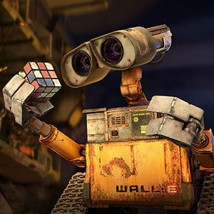

EVE (Extra-Terrestrial Vegetation Evaluator) is a sleek, state-of-the-art probe-droid. She’s fast, she flies, and she’s equipped with a laser gun. EVE, also called Probe One by the captain of the Axiom (the enormous luxury mother ship), is one of a fleet of similar robots sent to Earth on an undisclosed scanning mission.
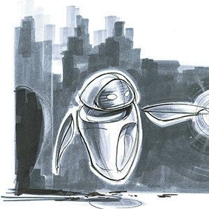
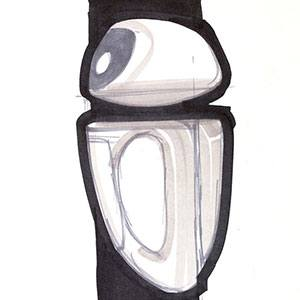

M-O (Microbe-Obliterator) is a cleaner-bot programmed to clean anything that comes aboard the Axiom that is deemed a “foreign contaminant.” M-O travels speedily around the Axiom on his roller ball, cleaning the dirty objects he encounters.

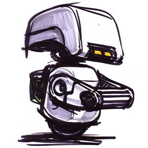


Auto is the Axiom’s autopilot, who has piloted the ship through all of its 700 years in space. A carefully programmed robot in the form of the ship’s steering wheel, Auto’s manner is cold, mechanical, and seemingly dutiful to the captain. Unknown to all the Axiom crew, a hidden mandate exists in Auto’s programming.
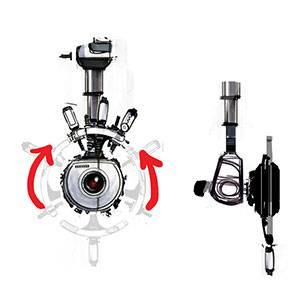
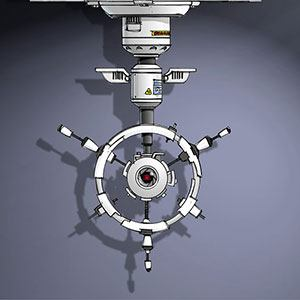
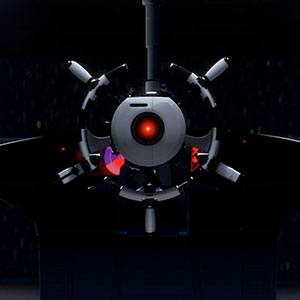
Captain is the current commander of the Axiom. His uneventful duties are simply checking and rechecking the ship’s status with Auto, the autopilot. When he is informed of a long-awaited discovery by one of the probe-droids, he discovers his inner calling to become the courageous leader he never could have imagined and plots a new course for humanity.
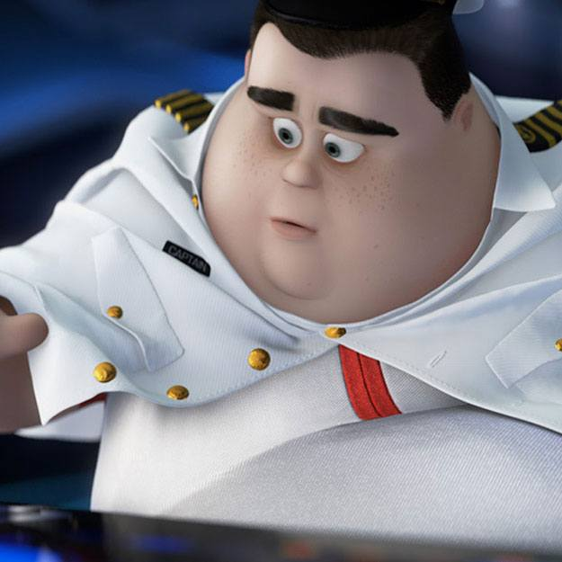
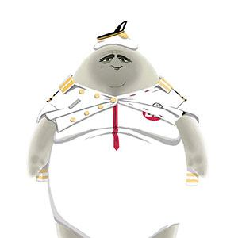
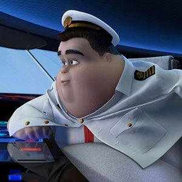

The dystopian planet of WALL•E was a blend of the fantastic and familiar. Audiences needed to recognize Earth but also understand how things had gone wrong on such a massive scale. In a short scene that followed WALL•E on his daily routine, the filmmakers wanted to reveal the planet's history in entirely visual terms. Dubbed “The Walk Home,” the segment used 10 of the most complicated sets ever created by Pixar, at the time, to tell a wordless, one-minute story.
Even a robot on a dystopian planet needs a place to call home. At first WALL•E’s truck is enlivened only by a cockroach and a Hello, Dolly! video. The atmosphere changes when EVE comes in. “We wanted it to feel really romantic,” explains Danielle Feinberg, director of photography for lighting. “So he plugs in a cord and turns on the Christmas lights he’s got strung all over and you immediately feel we’re in this nice, cozy intimate interior and this is WALL•E’s date night.“
Every film presents new opportunities for Pixar to interpret and design environments, imaginary or not. Using computers makes the art design choices as limitless as outer space. For WALL•E, the goal was not to reinvent space but to make design choices to enhance the story. The filmmakers wanted to ensure the audiences would be immersed in the story's action so they made a design choice to cheat the stars closer to camera than they would actually be in space so that the stars would move in the frame and allow the viewer to easily perceive the movement of the characters.
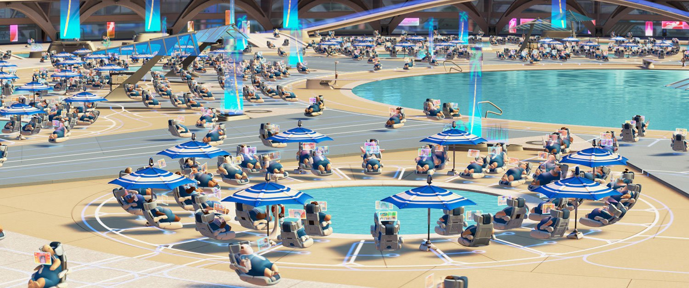
The luxury spaceship Axiom cuts an impressive profile. But unlike the mammoth space vehicles in most science fiction epics, it wasn’t designed to inspire fear or engage in deep space battle. Instead the Pixar team envisioned the last refuge of a consumer culture, a self-contained world built by the Buy n' Large Corporation, loaded with excess and wandering adrift with the remnants of human race.
A colorscript is a sequence of small pastel drawings or paintings used to emphasize color in each scene and establish a
film's visual language.
"I started by separating the two worlds using color. Earth is dusty, high contrast, and monochromatic, to support the idea that WAL•E’s life is drab and never changing. Then as EVE arrives and WALL•E cozies up to her, the colors become a little warmer. When we get to the Axiom it’s all about sterility…the passengers don’t have to think. The colors are more artificial, more planned, more consumer oriented. It’s not gaudy, but there’s a lot more color in Act Two than most people anticipate," explains production designer Ralph Eggleston.
DIRECTED BY ANDREW STANTON
CO-DIRECTED BY LINDSEY COLLINS
PRODUCED BY JIM MORRIS
EXECUTIVE PRODUCER JOHN LASSETER
ASSOCIATE PRODUCER THOMAS PORTER
ORIGINAL SCORE COMPOSED & CONDUCTED BY THOMAS NEWMAN
STORY BY ANDREW STANTON, PETE DOCTER
SCREENPLAY BY ANDREW STANTON, JIM REARDON
PRODUCTION DESIGNER RALPH EGGLESTON
FILM EDITOR STEPHEN SCHAFFER
SUPERVISING TECHNICAL DIRECTOR NIGEL HARDWIDGE
SUPERVISING ANIMATORS ALAN BARILLARO, STEVEN CLAY HUNTER
DIRECTOR OF PHOTOGRAPHY-CAMERA JEREMY LASKY
DIRECTOR OF PHOTOGRAPHY-LIGHTING DANIELLE FEINBERG
SOUND & CHARACTER VOICE DESIGNER BEN BURTT
PRODUCTION MANAGER ANDREA WARREN
CHARACTER ART DIRECTOR JASON DEAMER
SETS ART DIRECTOR ANTHONY CHRISTOV
SHADER ART DIRECTOR BERT BERRY
GRAPHICS ART DIRECTOR MARK CORDELL HOLMES
CHARACTER SUPERVISOR BILL WISE
SETS SUPERVISOR DAVID MUNIER
EFFECTS SUPERVISOR DAVID MACCARTHY
TECHNICAL PIPELINE SUPERVISOR JOHN WARREN
CHARACTER MODELING LEAD JASON BICKERSTAFF
CHARACTER SHADING LEAD ATHENA XENAKIS
SET MODELING LEAD KRISTIFIR KLEIN
SET SHADING LEAD CHRISTOPHER M. BURROWS
SET DRESSING LEAD DEREK WILLIAMS
CROWDS SUPERVISOR MARK T. HENNE
RENDERING SUPERVISOR SUSAN FISHER
"DOWN TO EARTH" MUSIC BY PETER GABRIEL AND THOMAS NEWMAN
LYRICS BY PETER GABRIEL
PERFORMED BY PETER GABRIEL, FEATURING THE SOWETO GOSPEL CHOIR
CASTING BY KEVIN REHER, NATALIE LYON
WALL•E BEN BURTT
EVE ELISSA KNIGHT
CAPTAIN JEFF GARLIN
SHELBY FORTHRIGHT, BNL CEO FRED WILLARD
AUTO MACINTALK
M-O BEN BURTT